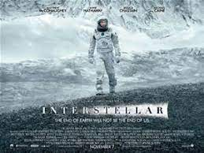

Taken (also titled 96 Hours and The Hostage) is a 2008 French English-language action-thriller film written by Luc Besson and Robert Mark Kamen, and directed by Pierre Morel. It stars Liam Neeson, Maggie Grace, Famke Janssen, Katie Cassidy, Leland Orser, and Holly Valance. Neeson plays Bryan Mills, an ex-CIA Agent who sets about tracking down his teenage daughter Kim (Grace) and her best friend Amanda (Cassidy) after the two girls are kidnapped by Albanian human traffickers while traveling in France during a vacation.
